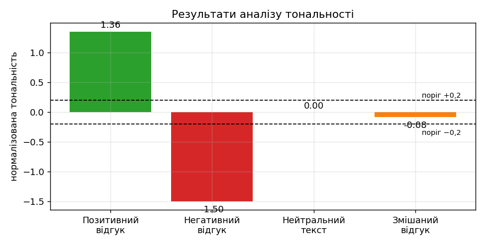
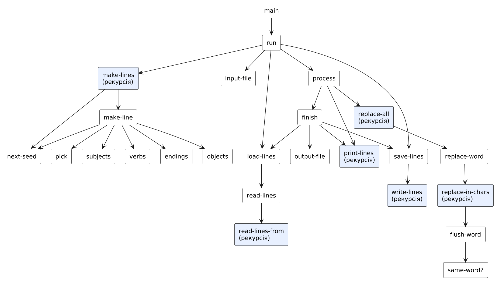
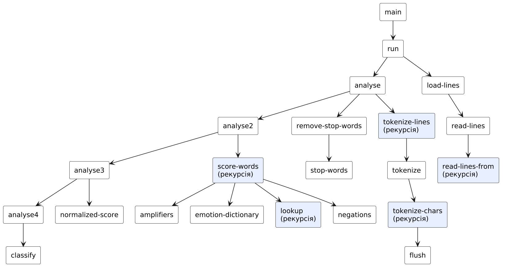

Обробка рядків та файлів мовами функціонального програмування
Варіант 3
Київ — 2026
Мета роботи
Мета подана за методичними вказівками до лабораторних занять з дисципліни «Функціональне програмування» (Київ, 2025).
Умова завдання
Варіант 3. Умова наведена з методичних вказівок.
Задача 7.1
3.1 Записати в текстовий файл n рядків тексту, що задаються програмою на функціональній мові програмування. Зчитати рядки із створеного програмою файлу, вивести їх на екран. Замінити в кожному реченні всі входження заданого слова на задане нове слово. Записати в новий текстовий файл результат обробки тексту.
Задача 7.2
3.2* Тональність тексту. Створити текстовий файл з довільною кількістю рядків. Визначити емоційне забарвлення тексту (позитивне / негативне / нейтральне). Реалізувати такі дії:
- зчитати текст в список рядків;
- попередня обробка тексту: токенізація (поділ рядків на слова), нормалізація (переведення слів у нижній регістр, видалення пунктуації);
- видалення стоп-слів за допомогою стандартної функції filter;
- створити словник емоцій (позитивних та негативних слів);
- для кожного слова визначити емоційну вагу: перевірити наявність слова в словнику емоцій; врахувати підсилювачі («дуже», «надзвичайно», «сильно» тощо); врахувати заперечення («не», «ні»); накопичувати вагу (бальна оцінка тональності);
- нормалізувати тональність як частку від ділення загальної тональності на лічильник емоційних слів;
- інтерпретація результату: на основі встановлених порогів (наприклад, бал тональності > 0,2 для «позитивний») віднести текст до категорії: позитивний, негативний або нейтральний;
- вивести кінцевий бал та його емоційну категорію.
Завдання підвищеної складності (*) — оцінюється з додатковим балом 0,5.
Аналіз задачі та математичне забезпечення
Задача 7.1: Текстові файли: заміна слова
План програми
- Генерація тексту. Кожен рядок складається з чотирьох частин «підмет — дієслово — додаток — закінчення», кожна обирається зі свого списку за значенням ЛКГ (s′ = (s·1103515245 + 12345) mod 231, індекс = (s′ div 65536) mod довжина). Результат відтворюється за seed.
- Запис у файл.
call-with-output-file+ рекурсивний вивід рядків (write-lines):displayу порт,newline. - Читання.
call-with-input-file;read-linesчитає символиread-charі збирає рядок у зворотний список символів; при# ewlineрядок завершується; стандартний R5RS не маєread-line, тому процедура написана власноруч. - Заміна слова. Скінченний автомат із двома станами «усередині слова» / «поза словом»: літери (
char-alphabetic?) накопичуються у слові, на першому нелітерному символі слово порівнюється з цільовим (без урахування регістру); якщо збіглося — у результат записується нове слово, інакше — старе; знаки пунктуації переносяться без змін. Складність O(L) за довжиною тексту. - Запис результату в новий файл і перевірка кількості рядків.
Особливості
Слово визначається як максимальна послідовність літер, тому «програмування» не замінюється всередині «програмувати» (інша словоформа) і не залежить від регістру («Програмування» → «код»). Це підтверджено тестами (збіг із регулярним виразом Python).
Задача 7.2: Тональність тексту
Конвеєр аналізу
- Зчитування: файл → список рядків.
- Токенізація й нормалізація: кожний рядок розбивається на слова за нелітерними символами; літери переводяться у нижній регістр (
char-downcase), пунктуація відкидається. - Стоп-слова:
(filter (lambda (w) (not (member w stop-words))) words). Слова «не», «ні», «дуже» навмисно не є стоп-словами, бо несуть інформацію про тональність. - Словник емоцій: асоціативний список слово → вага (позитивні: «гарний» +1, «чудовий» +2 …; негативні: «поганий» −1, «жахливий» −2 …); підсилювачі: «дуже» ×1,5, «надзвичайно» ×2, «сильно» ×1,5, «вкрай» ×2; заперечення «не», «ні» змінюють знак.
- Оцінка слів: проходом по списку зберігається поточний множник mult (добуток підсилювачів) і знак neg (±1). Для емоційного слова з вагою w додається mult·neg·w, лічильник N збільшується, mult і neg скидаються. Будь-яке інше слово також скидає їх (дія модифікатора — на найближче наступне емоційне слово).
- Нормалізація: T = S / N (середня вага емоційного слова; якщо N = 0, T = 0).
- Інтерпретація: T > 0,2 — позитивний; T < −0,2 — негативний; інакше нейтральний.
Приклад: «Це дуже гарний фільм» → стоп-слово «це» видаляється; «дуже» дає mult = 1,5; «гарний» (w = 1) → 1,5; N = 1; T = 1,5 — позитивний. «Це не гарний фільм» → neg = −1 → T = −1 — негативний.

Обмеження
Метод словниковий: без лематизації (потрібні словоформи зі словника), без розуміння іронії й контексту; слова поза словником не впливають. Ці обмеження типові для простих NLP-систем і задокументовані.
HIPO-діаграма (схема виклику процедур)
Діаграма показує ієрархію викликів процедур (стрілка A → B означає, що A викликає B); блоки з рекурсією виділено. Допоміжні процедури введення даних (ask-…) для наочності опущено.
Задача 7.1: Текстові файли: заміна слова

| Процедура | Вхід (Input) | Обробка / вихід (Process → Output) |
|---|---|---|
main | n, seed, слово, нове слово | виклик run |
make-lines / make-line | n, seed | список згенерованих рядків |
save-lines / write-lines | lines, filename | запис у файл |
load-lines / read-lines | filename | список рядків із файлу |
replace-all / replace-word | lines, слово, нове | рядки з заміною слова |
replace-in-chars / flush-word | chars, target, replacement | заміна у послідовності символів |
Задача 7.2: Тональність тексту

| Процедура | Вхід (Input) | Обробка / вихід (Process → Output) |
|---|---|---|
main | ім’я файлу | виклик run |
load-lines | filename | список рядків |
tokenize-lines / tokenize | рядки | список слів у нижньому регістрі |
remove-stop-words | words | слова без стоп-слів (filter) |
score-words | words, mult, neg, total, count | (сума балів, кількість емоційних слів) |
normalized-score / classify | результат | тональність і категорія |
Код
Код наведено текстом (не скріншотом). Файли можна завантажити та запустити в Dr.Racket або Guile.
#lang racket), далі (main). Причина: потрібні file-exists?, delete-file та стандартна filter. Перевірено в Racket 9.3 і Guile 3.0 — результати однакові.Задача 7.1: Текстові файли: заміна слова
⬇ task1_text_files.scm;; =====================================================================
;; ЛР7, варіант 3, задача 3.1. Робота з текстовими файлами.
;; 1) Програма генерує n рядків тексту й записує їх у файл text_input.txt;
;; 2) рядки зчитуються з файлу та виводяться на екран;
;; 3) у кожному реченні всі входження заданого слова замінюються на нове слово;
;; 4) результат записується в новий файл text_output.txt.
;; Слово — максимальна послідовність літер (знаки пунктуації та пробіли його не входять),
;; порівняння слів не залежить від регістру. Використано стандартні R5RS-процедури
;; введення-виведення: call-with-output-file, call-with-input-file, read-char, display.
;; Мова: «The Racket Language» у Dr.Racket (або Guile). Без let / set! / циклів.
;; Чому не R5RS: у Racket-R5RS немає file-exists? та delete-file, а call-with-output-file
;; не перезаписує існуючий файл — тому файл перед записом видаляється.
;; =====================================================================
;; ---------- Генерація тексту ----------
(define subjects '("Студент" "Програміст" "Викладач" "Дослідник" "Інженер"))
(define verbs '("вивчає" "описує" "перевіряє" "використовує" "створює"))
(define objects '("функціональне програмування" "рекурсивні процедури" "списки та вектори"
"символьні обчислення" "чисельні методи"))
(define endings '("щодня" "з цікавістю" "у лабораторії" "разом із командою" "вдома"))
(define (next-seed s) (remainder (+ (* s 1103515245) 12345) 2147483648))
(define (pick lst seed) (list-ref lst (remainder (quotient seed 65536) (length lst))))
;; Один рядок: «Підмет дієслово додаток закінчення.»
;; Кожен компонент вибирається зі свого списку наступним значенням генератора.
(define (make-line seed)
(string-append (pick subjects (next-seed seed)) " "
(pick verbs (next-seed (next-seed seed))) " "
(pick objects (next-seed (next-seed (next-seed seed)))) " "
(pick endings (next-seed (next-seed (next-seed (next-seed seed))))) "."))
;; Список із n рядків
(define (make-lines n seed)
(if (= n 0)
'()
(cons (make-line seed) (make-lines (- n 1) (next-seed (next-seed (next-seed (next-seed (next-seed seed)))))))))
;; ---------- Запис рядків у файл ----------
(define (write-lines lines port)
(if (null? lines)
#t
(begin (display (car lines) port) (newline port) (write-lines (cdr lines) port))))
;; Якщо файл уже існує, його спершу видаляємо: у Racket call-with-output-file не перезаписує існуючий файл.
(define (save-lines lines filename)
(cond ((file-exists? filename) (delete-file filename)))
(call-with-output-file filename (lambda (port) (write-lines lines port))))
;; ---------- Читання рядків із файлу ----------
;; Повертає список рядків; рядок накопичується як зворотний список символів
(define (read-lines port)
(read-lines-from port (read-char port) '() '()))
(define (read-lines-from port c current acc)
(cond ((eof-object? c)
(reverse (if (null? current) acc (cons (list->string (reverse current)) acc))))
((char=? c #\newline)
(read-lines-from port (read-char port) '() (cons (list->string (reverse current)) acc)))
(else (read-lines-from port (read-char port) (cons c current) acc))))
(define (load-lines filename)
(call-with-input-file filename read-lines))
;; ---------- Заміна слова ----------
;; replace-in-chars проходить по символах рядка: літери накопичуються у слові word;
;; на першому нелітерному символі слово порівнюється із цільовим і дописується в результат.
(define (same-word? chars target)
(string=? (string-downcase (list->string chars)) (string-downcase target)))
(define (flush-word word target replacement out)
;; word і out — зворотні списки символів; повертає новий out
(cond ((null? word) out)
((same-word? (reverse word) target) (append (reverse (string->list replacement)) out))
(else (append word out))))
(define (replace-in-chars chars target replacement word out)
(cond ((null? chars) (reverse (flush-word word target replacement out)))
((char-alphabetic? (car chars))
(replace-in-chars (cdr chars) target replacement (cons (car chars) word) out))
(else
(replace-in-chars (cdr chars) target replacement '()
(cons (car chars) (flush-word word target replacement out))))))
(define (replace-word line target replacement)
(list->string (replace-in-chars (string->list line) target replacement '() '())))
(define (replace-all lines target replacement)
(if (null? lines)
'()
(cons (replace-word (car lines) target replacement)
(replace-all (cdr lines) target replacement))))
;; ---------- Виведення на екран ----------
(define (print-lines lines i)
(if (null? lines)
#t
(begin (display " ") (display i) (display ". ") (display (car lines)) (newline)
(print-lines (cdr lines) (+ i 1)))))
;; ---------- Інтерфейс ----------
(define input-file "text_input.txt")
(define output-file "text_output.txt")
(define (main)
(display "Кількість рядків n: ") (ask-seed (read)))
(define (ask-seed n)
(display "Початкове число генератора: ") (ask-word n (read)))
(define (ask-word n seed)
(display "Слово, яке потрібно замінити (у лапках): ") (ask-new n seed (read)))
(define (ask-new n seed old)
(display "Нове слово (у лапках): ") (run n seed old (read)))
(define (run n seed old new)
(newline)
(save-lines (make-lines n seed) input-file)
(display "Файл ") (display input-file) (display " записано.") (newline)
(display "Прочитано з файлу:") (newline)
(process (load-lines input-file) old new))
(define (process lines old new)
(print-lines lines 1)
(newline)
(display "Заміна слова «") (display old) (display "» на «") (display new) (display "»:") (newline)
(finish (replace-all lines old new)))
(define (finish result)
(print-lines result 1)
(save-lines result output-file)
(newline)
(display "Результат записано у файл ") (display output-file) (newline)
(display "Перевірка: файл містить ") (display (length (load-lines output-file))) (display " рядків.") (newline))
Задача 7.2: Тональність тексту
⬇ task2_sentiment.scm;; =====================================================================
;; ЛР7, варіант 3, задача 3.2*. Тональність (емоційне забарвлення) тексту.
;; Етапи:
;; 1) зчитування файлу в список рядків;
;; 2) токенізація (поділ на слова) і нормалізація (нижній регістр, пунктуація відкидається);
;; 3) видалення стоп-слів стандартною функцією filter;
;; 4) словник емоцій (слова з вагами);
;; 5) оцінка кожного слова з урахуванням підсилювачів («дуже», «надзвичайно», «сильно», «вкрай»)
;; та заперечень («не», «ні»), накопичення балів і лічильника емоційних слів;
;; 6) нормалізація: тональність = сума балів / кількість емоційних слів;
;; 7) інтерпретація за порогами: > 0.2 — позитивний, < -0.2 — негативний, інакше нейтральний.
;; Мова: «The Racket Language» у Dr.Racket (потрібна стандартна filter) або Guile. Без let / set! / циклів.
;; =====================================================================
;; ---------- 1. Читання файлу ----------
(define (read-lines port)
(read-lines-from port (read-char port) '() '()))
(define (read-lines-from port c current acc)
(cond ((eof-object? c)
(reverse (if (null? current) acc (cons (list->string (reverse current)) acc))))
((char=? c #\newline)
(read-lines-from port (read-char port) '() (cons (list->string (reverse current)) acc)))
(else (read-lines-from port (read-char port) (cons c current) acc))))
(define (load-lines filename)
(call-with-input-file filename read-lines))
;; ---------- 2. Токенізація і нормалізація ----------
;; Рядок → список слів (літери переводяться у нижній регістр, усе інше — роздільник)
(define (tokenize-chars chars word out)
(cond ((null? chars) (reverse (flush word out)))
((char-alphabetic? (car chars))
(tokenize-chars (cdr chars) (cons (char-downcase (car chars)) word) out))
(else (tokenize-chars (cdr chars) '() (flush word out)))))
(define (flush word out)
(if (null? word) out (cons (list->string (reverse word)) out)))
(define (tokenize line) (tokenize-chars (string->list line) '() '()))
;; Список рядків → єдиний список слів
(define (tokenize-lines lines)
(if (null? lines) '() (append (tokenize (car lines)) (tokenize-lines (cdr lines)))))
;; ---------- 3. Стоп-слова ----------
;; Слова «не», «ні», «дуже» тощо навмисно НЕ є стоп-словами — вони потрібні для оцінки.
(define stop-words
'("і" "й" "та" "в" "у" "на" "з" "із" "до" "що" "це" "як" "але" "проте" "я" "ми" "ви"
"він" "вона" "воно" "вони" "то" "же" "ж" "а" "б" "би" "ось" "такі" "такий" "просто"))
(define (remove-stop-words words)
(filter (lambda (w) (not (member w stop-words))) words))
;; ---------- 4. Словники ----------
(define emotion-dictionary
'(("гарний" . 1) ("чудовий" . 2) ("чудова" . 2) ("цікавий" . 1) ("приємна" . 1) ("люблю" . 1)
("радий" . 1) ("прекрасний" . 2) ("добрий" . 1) ("чудові" . 2) ("цікава" . 1)
("поганий" . -1) ("жахливий" . -2) ("жахлива" . -2) ("нудний" . -1) ("слабкі" . -1)
("розчарований" . -2) ("погана" . -1) ("нудна" . -1) ("жахливі" . -2)))
(define amplifiers '(("дуже" . 1.5) ("надзвичайно" . 2) ("сильно" . 1.5) ("вкрай" . 2)))
(define negations '("не" "ні"))
;; Пошук у асоціативному списку: значення або #f
(define (lookup word table)
(cond ((null? table) #f)
((string=? word (car (car table))) (cdr (car table)))
(else (lookup word (cdr table)))))
;; ---------- 5. Оцінка слів ----------
;; Стан: mult — множник від підсилювачів, neg — -1 після заперечення (інакше 1),
;; total — сума балів, count — кількість емоційних слів.
;; Підсилювач/заперечення діють на найближче наступне емоційне слово; будь-яке інше слово
;; скидає їх. Результат: список (total count).
(define (score-words words mult neg total count)
(cond ((null? words) (list total count))
((lookup (car words) amplifiers)
(score-words (cdr words) (* mult (lookup (car words) amplifiers)) neg total count))
((member (car words) negations)
(score-words (cdr words) mult (* neg -1) total count))
((lookup (car words) emotion-dictionary)
(score-words (cdr words) 1 1
(+ total (* mult neg (lookup (car words) emotion-dictionary)))
(+ count 1)))
(else (score-words (cdr words) 1 1 total count))))
;; ---------- 6. Нормалізація ----------
(define (normalized-score r)
(if (= (cadr r) 0) 0 (/ (car r) (cadr r))))
;; ---------- 7. Інтерпретація ----------
(define (classify score)
(cond ((> score 0.2) "позитивний")
((< score -0.2) "негативний")
(else "нейтральний")))
;; ---------- Інтерфейс ----------
(define (main)
(display "Ім'я текстового файлу (у лапках): ")
(run (read)))
(define (run filename)
(newline)
(analyse (load-lines filename)))
(define (analyse lines)
(display "Прочитано рядків: ") (display (length lines)) (newline)
(analyse2 (remove-stop-words (tokenize-lines lines))))
(define (analyse2 words)
(display "Слів після видалення стоп-слів: ") (display (length words)) (newline)
(display "Слова: ") (display words) (newline)
(analyse3 (score-words words 1 1 0 0)))
(define (analyse3 r)
(display "Сума балів: ") (display (car r)) (newline)
(display "Емоційних слів: ") (display (cadr r)) (newline)
(analyse4 (normalized-score r)))
(define (analyse4 score)
(display "Нормалізована тональність: ") (display score) (newline)
(display "Категорія: ") (display (classify score)) (newline))
Скріншот роботи та результату
Знімки консолі відтворюють роботу програм: запуск виконано в інтерпретаторі Guile 3.0 (R5RS-сумісний); введені користувачем значення виділено зеленим. Для кожного запуску наведено умови та результат.
Задача 7.1: Текстові файли: заміна слова

Задача 7.2: Тональність тексту


Оцінка достовірності результату
Заміна слова: збіг із регулярним виразом Python
| Вхідні дані | Результат програми | Еталон | |
|---|---|---|---|
| «Студент вивчає функціональне програмування щодня.» [програмування → кодування] | Студент вивчає функціональне кодування щодня. | Студент вивчає функціональне кодування щодня. | ✓ |
| «Програмування — це мистецтво. Програмування вимагає уваги, а програмувати легко!» [програмування → код] | код — це мистецтво. код вимагає уваги, а програмувати легко! | код — це мистецтво. код вимагає уваги, а програмувати легко! | ✓ |
| «кіт і Кіт та котик, кіт!» [кіт → пес] | пес і пес та котик, пес! | пес і пес та котик, пес! | ✓ |
| «Слово без збігу.» [відсутнє → нове] | Слово без збігу. | Слово без збігу. | ✓ |
| «a-b a_b ab, a» [a → XY] | XY-b XY_b ab, XY | XY-b XY_b ab, XY | ✓ |
5 / 5 збігів.
Генератор тексту: збіг із Python-реалізацією того ж LCG
| Вхідні дані | Результат програми | Еталон | |
|---|---|---|---|
| n=4, seed=11 | (Програміст створює рекурсивні процедури разом із командою. Викладач п… | (Програміст створює рекурсивні процедури разом із командою. Викладач п… | ✓ |
| n=3, seed=2026 | (Студент використовує списки та вектори у лабораторії. Студент створює… | (Студент використовує списки та вектори у лабораторії. Студент створює… | ✓ |
2 / 2 збігів.
Токенізація та нормалізація
| Вхідні дані | Результат програми | Еталон | |
|---|---|---|---|
| Це дуже ГАРНИЙ фільм, я не люблю нудне! | (це дуже гарний фільм я не люблю нудне) | (це дуже гарний фільм я не люблю нудне) | ✓ |
| Слово-слово; ще (слово)... | (слово слово ще слово) | (слово слово ще слово) | ✓ |
2 / 2 збігів.
Тональність: підсиленн, заперечення, пороги — проти незалежної реалізації
| Вхідні дані | Результат програми | Еталон | |
|---|---|---|---|
| Це дуже гарний фільм | 1.5 / 1 / позитивний | 1.5 / 1 / позитивний | ✓ |
| Це не гарний фільм | -1 / 1 / негативний | -1 / 1 / негативний | ✓ |
| Це не дуже гарний фільм | -1.5 / 1 / негативний | -1.5 / 1 / негативний | ✓ |
| Сюжет жахливий і надзвичайно нудний | -4 / 2 / негативний | -4 / 2 / негативний | ✓ |
| Фільм триває дві години | 0 / 0 / нейтральний | 0 / 0 / нейтральний | ✓ |
| чудовий та поганий | 1 / 2 / позитивний | 1 / 2 / позитивний | ✓ |
| не не гарний | 1 / 1 / позитивний | 1 / 1 / позитивний | ✓ |
7 / 7 збігів.
Аналіз коду на відповідність критеріям простоти та Clean code
Код проаналізовано за критеріями чистого коду та за вимогами завдання: прочитано кожну програму, автоматично пораховано метрики й виконано пошук заборонених конструкцій. Нижче — критерії, вимірювання та висновки; випадки, де за результатами аналізу код було змінено, позначені «знайдено й виправлено».
Критерії
| Критерій | Що перевірялось |
|---|---|
| Іменування | імена відображають зміст (дієслова для дій, іменники для даних) |
| Малі функції | одна процедура — одна відповідальність; довжина процедур |
| Відсутність побічних ефектів | немає set!, змінних стану; значення передаються параметрами |
| Відповідність обмеженням | заборонені конструкції (let, let*, letrec, do, while, for, loop) |
| Простота | немає дублювання обчислень, зайвих абстракцій; коментарі пояснюють «чому», а не «що» |
| Коректність і тестованість | чисті процедури можна перевірити окремо (див. розділ «Оцінка достовірності») |
Задача 7.1: Текстові файли: заміна слова
| Рядків | Рядків коду | Рядків коментарів | Процедур | Середня довжина | Максимальна довжина |
|---|---|---|---|---|---|
| 133 | 85 | 27 | 28 | 3.0 | 7 |
| let | let* | letrec | set! | do | while/for/loop |
|---|---|---|---|---|---|
| 0 | 0 | 0 | 0 | 0 | 0 |
Висновки перевірки
- Процедури невеликі й називаються за змістом (
make-line,save-lines,load-lines,replace-word); ввід-вивід відокремлений від обробки рядків; імена файлів — константиinput-file,output-file. - Заміна слова — окремий чистий алгоритм без побічних ефектів; він покритий порівнянням із регулярним виразом Python.
- Зауваження:
read-linesдублюється у двох файлах лабораторної (task1іtask2); у реальному проєкті слід винести у спільний модуль. - Зауваження: шлях до файлів відносний (поточна директорія); у Dr.Racket це папка з програмою — задокументовано.
Задача 7.2: Тональність тексту
| Рядків | Рядків коду | Рядків коментарів | Процедур | Середня довжина | Максимальна довжина |
|---|---|---|---|---|---|
| 120 | 73 | 29 | 22 | 3.3 | 11 |
| let | let* | letrec | set! | do | while/for/loop |
|---|---|---|---|---|---|
| 0 | 0 | 0 | 0 | 0 | 0 |
Висновки перевірки
- Етапи конвеєра виражені окремими процедурами, що комбінуються композицією — чітко видно поетапну обробку тексту.
- Стоп-слова й словники винесені в іменовані константи (дані відокремлені від логіки); додавання слів не змінює код алгоритму.
- Використано стандартну
filter(SRFI-1/Racket) — як вимагає умова; решта процедур — R5RS. - Зауваження: немає лематизації, тому словник містить конкретні словоформи; для реального застосування потрібен стемер або морфологічний словник української мови.
Примітка: метрики розраховано автоматично скриптом (кількість рядків, процедур, довжина процедур, пошук заборонених конструкцій).
Висновок
Розроблено програми обробки текстових файлів: генерація тексту, запис у файл, читання, заміна слів і запис результату, а також (підвищеної складності) аналіз тональності тексту з токенізацією, нормалізацією, фільтрацією стоп-слів стандартною filter, словником емоцій, підсилювачами та запереченнями, нормалізованим балом і порогами інтерпретації. Тести (позитивний, негативний, нейтральний, змішаний тексти) дали очікувані категорії; незалежні перевірки проти Python (регулярні вирази, власна реалізація алгоритму) — 16 порівнянь, усі пройдено.